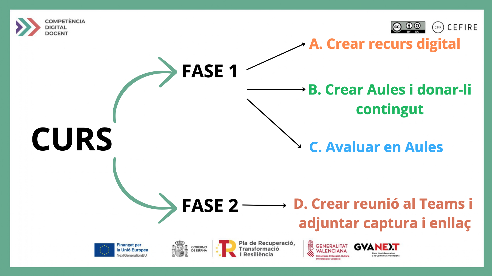

Projecte de Formació en Centres: Centre Digital
25.03.2025 - 19:39:16
Competència Digital Docent
Sessions
13.03.dj - AREA 2. MRCDD - Recursos Digitals
20.03.dj - AREA 1 MRCDD - Compromís Professional
27.03.dj - Sessió d'expossició i dubtes, sense ACTA ni TEAMS
31.03.dj - AREA 3 MRCDD - Ensenyament i Aprenentatge
07.04.dj - AREA 4 - Avaluació i Retroalimentació
14.04.dj - AREA 5 - Apoderament de l'Alumnat
05.05.dj - AREA 6 - Desenvolupament de la Competència Digital en l'Alumnat
Entregues
06.04.dg - FASE 1 - MODUL A
27.04.dm - FASE 1 - MODUL B
18.05.dg - FASE 1 - MODUL C
05.06.dj - FASE 2 - Scheduler. Cita Evidenciació
15.06.dg - FASE 2 - EVIDENCIACIÓ
Estructura
